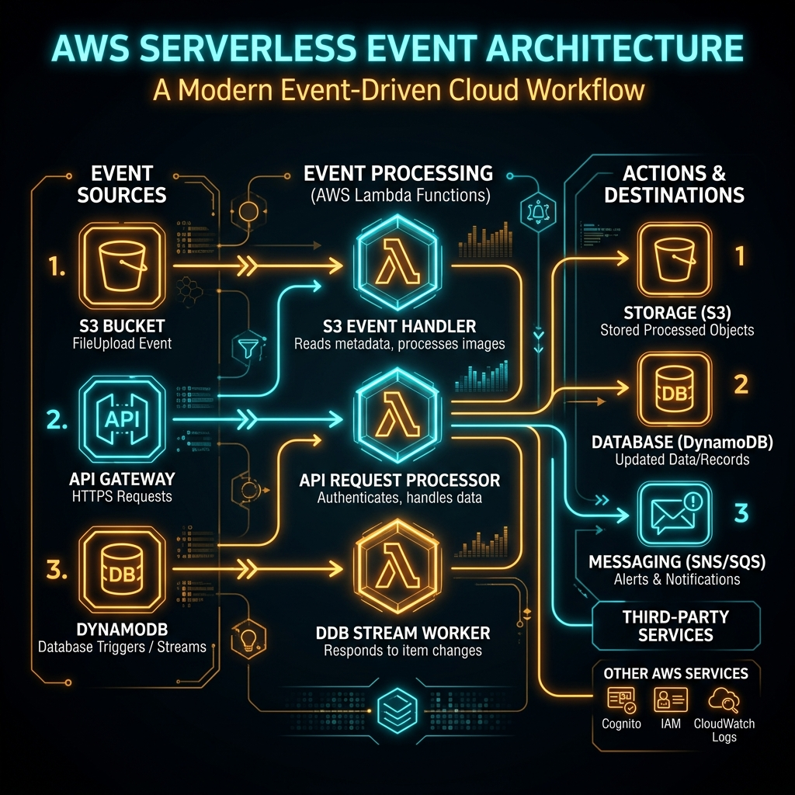
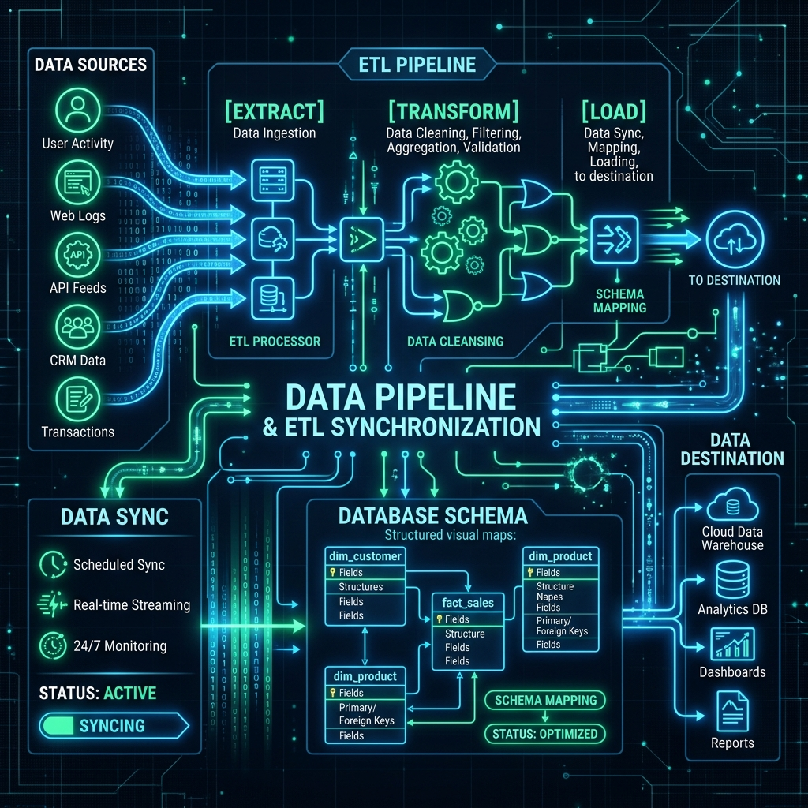
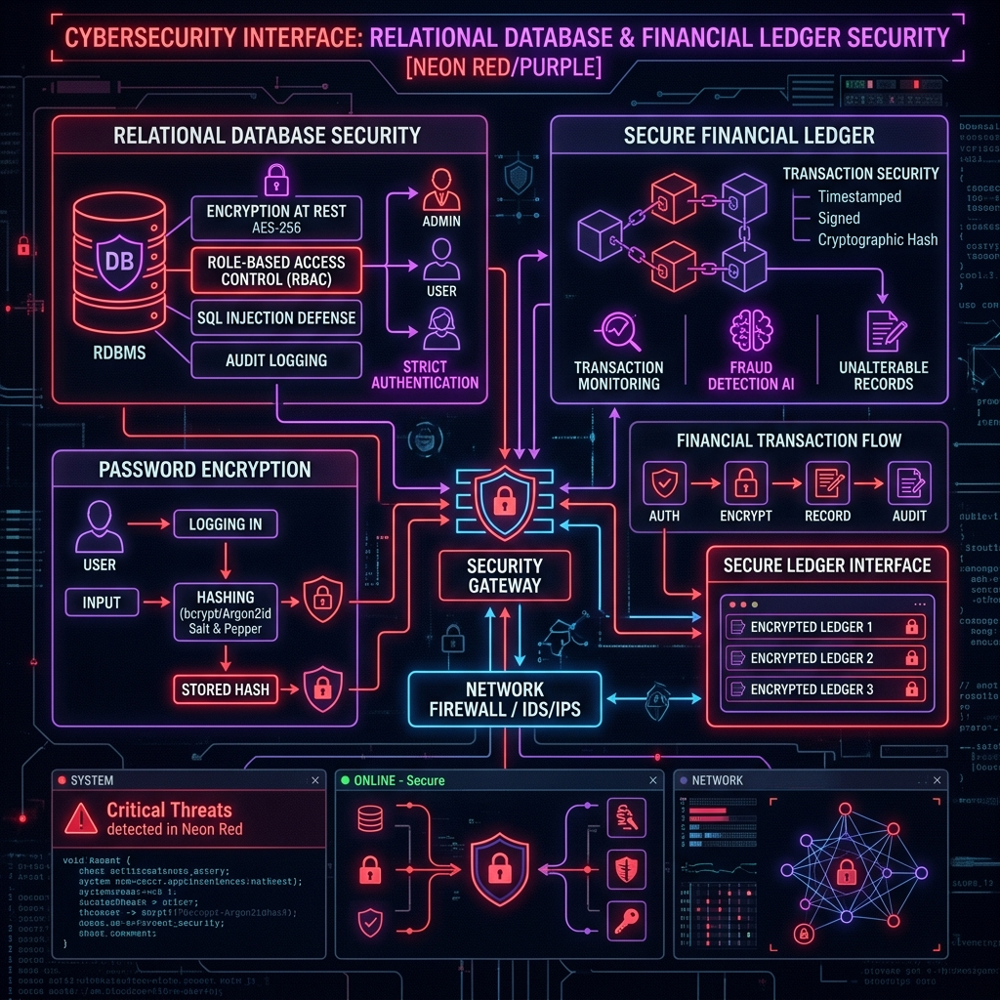

Hi, I'm Yashrith
Data & Analytics professional based in Montreal, QC. Expert in designing production-ready machine learning and data systems — from end-to-end ETL/ELT pipelines to RAG architectures.
Experience Timeline
A log of my engineering and systems specialization milestones. Click a node to expand the commit details.
Education Timeline
My academic history, focusing on Computer Science, AI, and Mathematics. Click a node to expand course details.
GitHub Contributions
Active participant in the developer ecosystem, contributing to complex open-source infrastructure projects.
Evaluated repository bugs and structural bottlenecks within a complex codebase, implementing precise patches through Git to stabilize database extraction configurations. Engaged with international maintainers via pull requests, aligning submissions with continuous integration pipelines and validation metrics.
Engineering Projects
A showcase of data pipelines, secure databases, and cloud engineering projects.



Research Papers & Concepts
Academic reports, DOI publications, and theoretical prototypes exploring local LLMs and structured parsing reliability.
Quantization Precision Degradation and Latency Predictability in Deterministic Local LLM Ingestion Pipelines
Evaluates weight quantization impacts (INT8, INT4) on precision degradation and latency profiles within high-throughput local LLM pipelines. Benchmarks token throughput variations and memory footprint constraints across local execution environments.
Learning & Certifications
Acquired certifications verifying systems operations, python programming, and cybersecurity fundamentals.
Intro to Snowflake for Devs, Data Scientists, Data Engineers
Snowflake Verified Course Certificate
Connect With Me
Feel free to reach out for opportunities, collaboration, or just to say hello.
Please connect or reach out directly on LinkedIn, GitHub, or Email. I am based in Montreal, QC and look forward to hearing from you.